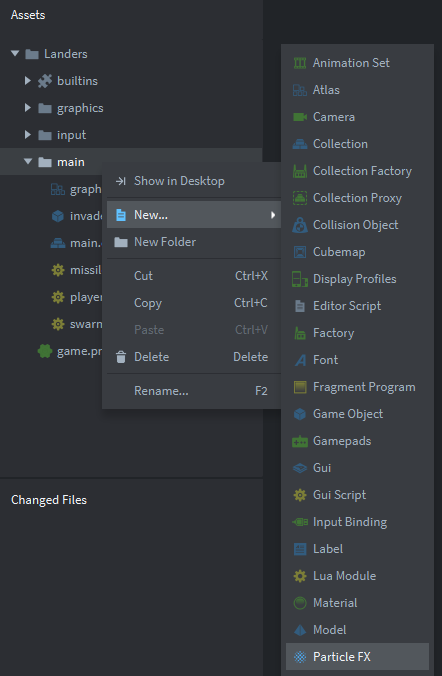
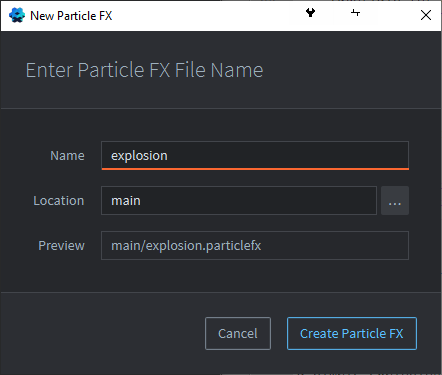

Tutorials for 2D games projects
Landers | Creating an explosion effect.
Defold has a built in particle effects engine. It is great for creating a number of simple effects that can really enhance your game. When an invader has been shot we want to play a simple explosion effect.
- In the assets panel, right click the 'main' folder and select, 'New...', 'Particle FX'.

- Name the Particle FX, 'explosion' and click, 'Create Particle FX'.

- In the outline panel, in the 'ParticleFX', click ' emitter'.
- Leave all the default properties as they are set, and change the following properties:
- Play Mode: Once
- Duration: 0.2
- Max Particle Count: 64
- Emitter Type: Circle
- Spawn Rate: 1000
- Particle Life Time: 0.5
- Initial Speed: 150 | with a +/-: 50
- Initial Red: 0.67
- Initial Green: 0.74
- Initial Blue: 0.85
- You can preview the effect by clicking 'emitter' in the outline panel and pressing the space bar. You may need to use the mouse wheel to zoom out a little in the editor window.
- Save the changes by pressing CTRL-S or 'File', 'Save All'.
We want the effect to be played once when it is triggered. The particles continue to spawn for 0.2 seconds up to a maximum of 64 particles. We want the particles to be emitted as a circle outwards, at a rate of 1000 per second. Each particle should live for half a second. Each particle's speed is 150 with a random variance of 50. The colours of the particles in red, green and blue are hex values divided by 255. They don't change colour over time. We want the particles to be the same colour as the invader ship.
There is a lot going on here and we are scratching the surface of the capabilities of the engine. For a full explanation of the settings take a look at the Defold help on Particle FX.
The next stage is to set up the collision objects. Stage 6b >
 Craig'n'Dave | Version 1.3
Craig'n'Dave | Version 1.3